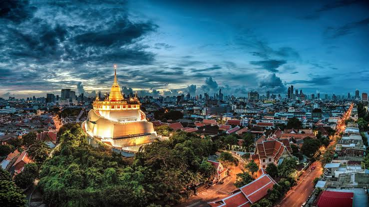
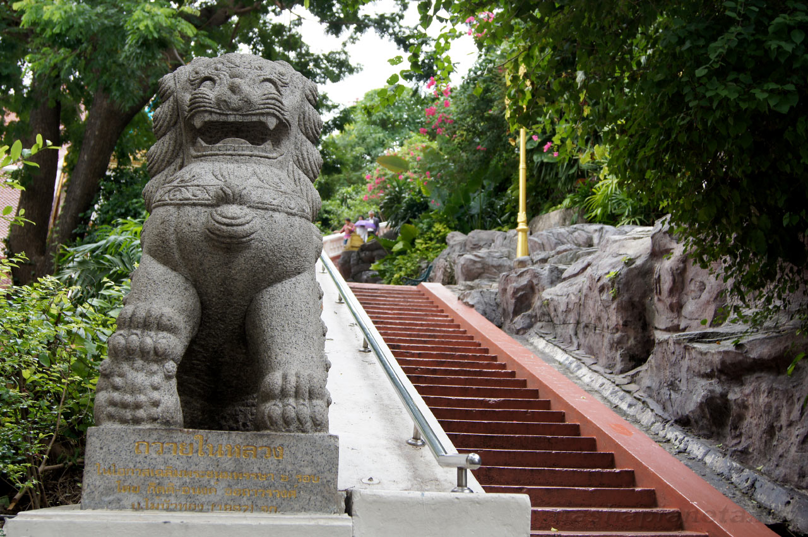
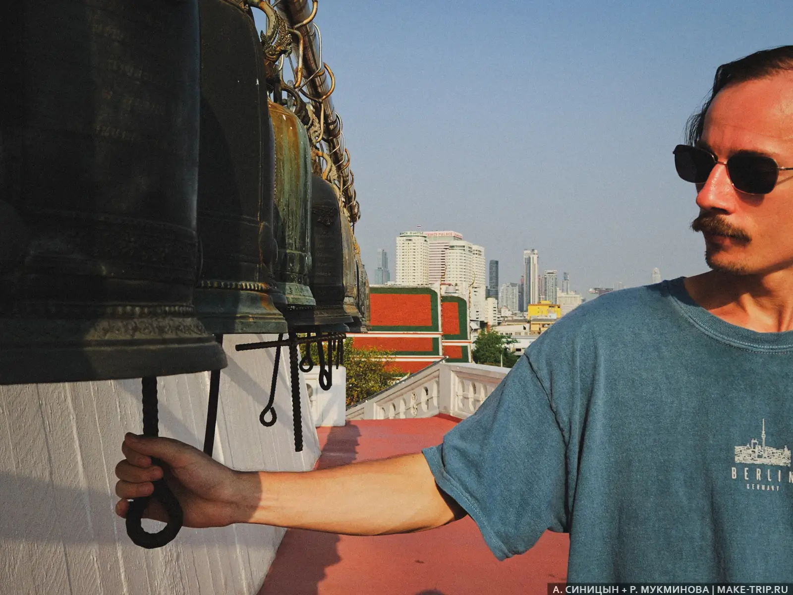
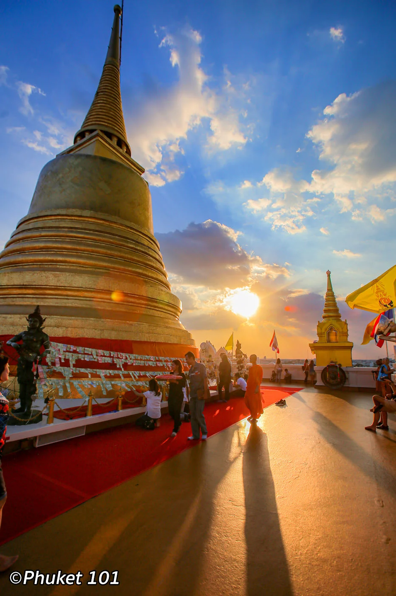
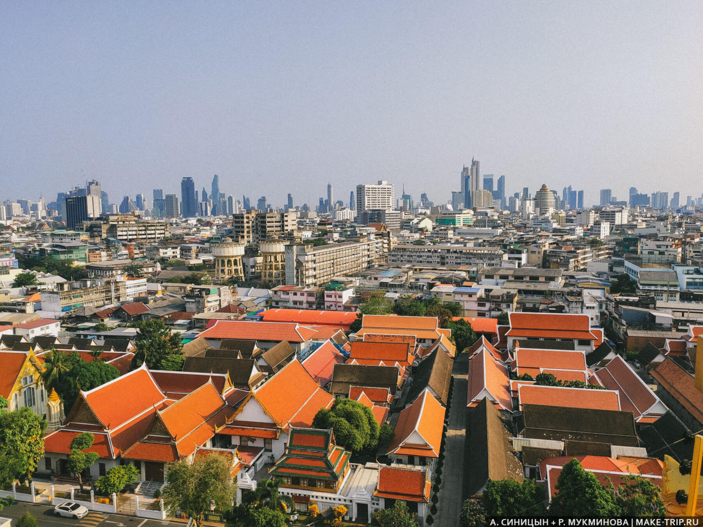
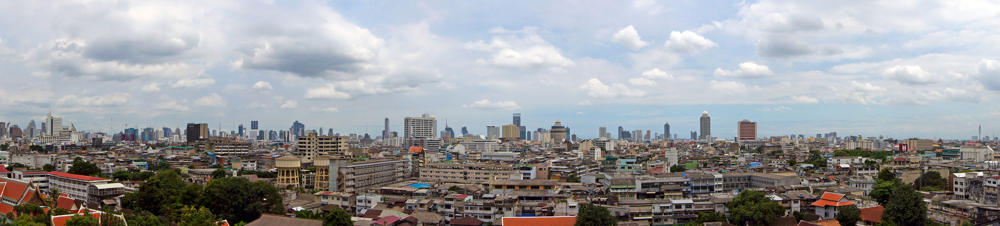
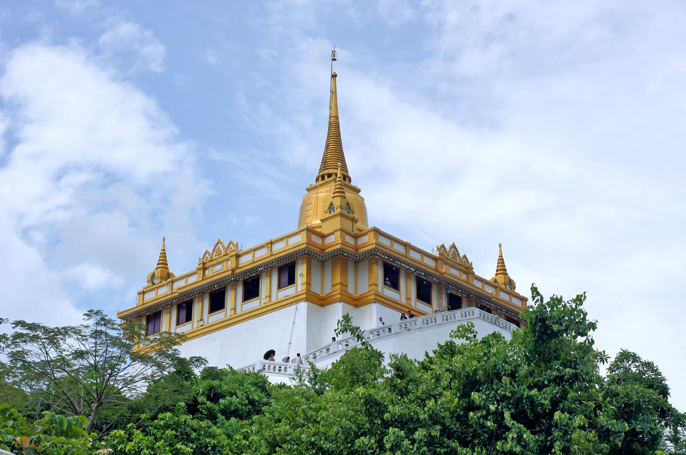

Travel Diary |
Главная | Страны | Советы | Места |

Ват Сакет, более известный среди туристов как Золотая гора, — один из самых необычных храмов Бангкока. Главная особенность храма заключается в том, что золотая ступа находится на вершине искусственного холма высотой около 77 метров. Чтобы попасть к вершине, нужно подняться по извилистой лестнице из 344 ступеней. По пути встречаются колокола, небольшие водопады, деревья и буддийские святыни.
На вершине находится золотая ступа Phu Khao Thong, а вокруг неё расположена смотровая площадка. Отсюда открывается панорамный вид на исторический центр Бангкока.
Ват Сакет находится в историческом центре Бангкока, в районе Pom Prap Sattru Phai.
Адрес: 344 Chakkraphatdi Phong Road, Ban Bat, Pom Prap Sattru Phai, Bangkok 10100, Thailand. Храм расположен недалеко от Каосан Роуд, Монумента демократии и других достопримечательностей старого Бангкока.
Вход на территорию храма бесплатный, однако подъём на Золотую гору для иностранных туристов обычно стоит 50 бат.
Оплата производится перед подъёмом на вершину. Цены и правила посещения могут изменяться, поэтому перед поездкой лучше проверить актуальную информацию.
Ват Сакет открыт ежедневно.
По данным Туристического управления Таиланда, храм работает примерно с 08:00 до 18:00. Некоторые актуальные туристические источники указывают более продолжительное время работы территории храма, поэтому для подъёма на вершину лучше приезжать заранее. Лучшее время для посещения — раннее утро или ближе к вечеру. В это время не так жарко, а вечером с вершины можно увидеть закат над старым Бангкоком.
Самая удобная станция метро — Sam Yot на синей линии MRT.
От станции до Ват Сакет можно дойти пешком примерно за 15–20 минут.
По дороге можно увидеть старые улицы исторического центра Бангкока.
Ещё один интересный вариант — воспользоваться лодкой по каналу Saen Saep. Нужно выйти на причале Phan Fa Lilat, который находится совсем недалеко от Золотой горы. Такой вариант особенно удобен, если вы уже находитесь в районе центрального Бангкока.
До Ват Сакет можно также доехать на такси, тук-туке или воспользоваться приложением Grab. Однако в историческом центре Бангкока часто бывают пробки, поэтому метро или лодка могут оказаться удобнее.
Если вы уже находитесь на Khao San Road, до Золотой горы можно дойти пешком примерно за 15–20 минут.
Главная достопримечательность Ват Сакет — сама Золотая гора. Подъём на вершину проходит по круговой лестнице, которая постепенно поднимается вокруг искусственного холма.

344 ступени ведут от основания холма к вершине.
Лестница проходит по кругу, поэтому подъём не ощущается как длинная прямая лестница. По пути можно остановиться отдохнуть, позвонить в храмовые колокола и посмотреть на окружающую зелень.
Большая часть маршрута проходит среди деревьев, поэтому подъём приятнее, чем может показаться на первый взгляд.

Вдоль лестницы расположено большое количество колоколов.
Посетители могут позвонить в них, следуя местным традициям. Звон колоколов является одной из характерных особенностей подъёма на Золотую гору.
По пути также встречаются небольшие святыни и буддийские изображения.

На вершине холма находится знаменитая золотая ступа Phu Khao Thong.
Внутри ступы хранятся буддийские реликвии. Именно золотая ступа является главным символом Ват Сакет и дала достопримечательности её туристическое название — Золотая гора.
После подъёма можно обойти ступу и осмотреть храмовые помещения.
 |
 |
С вершины открывается панорамный вид на Бангкок.
Особенно хорошо виден исторический центр города: крыши храмов, старые кварталы, улицы и современные здания вдалеке.
С одной стороны можно увидеть старый Бангкок, а в другой части горизонта появляются современные небоскрёбы.
Это делает Золотую гору одним из лучших мест для того, чтобы увидеть контраст между историческим и современным городом.

Помимо Золотой горы, на территории находится сам Wat Saket Ratchawora Mahawihan.
Это действующий буддийский храм с молитвенными залами, статуями Будды и традиционными элементами тайской архитектуры.
После подъёма можно спуститься и спокойно осмотреть территорию храма.
Одно из главных преимуществ Золотой горы — возможность увидеть именно историческую часть Бангкока.
В отличие от смотровых площадок современных небоскрёбов, здесь вокруг находятся преимущественно невысокие здания, храмы и старые кварталы.
Особенно красиво город выглядит во время заката, когда крыши храмов и здания старого города освещаются тёплым светом.
Ват Сакет находится в одном из самых интересных районов старого Бангкока, поэтому его удобно объединить с несколькими другими достопримечательностями.
Необычный буддийский храмовый комплекс, расположенный практически рядом с Золотой горой. Его легко узнать по многочисленным металлическим шпилям. Посещение этих двух достопримечательностей можно объединить в одну прогулку.
Khao San Road находится примерно в 15–20 минутах ходьбы от Ват Сакет. После посещения храма можно отправиться туда на вечернюю прогулку, поужинать или посмотреть ночную жизнь района.
Монумент демократии расположен на одной из главных улиц исторического Бангкока. До него можно легко дойти пешком от Золотой горы.
Чайна-таун находится южнее Ват Сакет. Если после посещения храма хочется продолжить прогулку по старому Бангкоку, можно отправиться туда и закончить день на Yaowarat Road.
Наденьте удобную обувь. Несмотря на относительно небольшую высоту холма, вам предстоит подняться по 344 ступеням.
Не поднимайтесь в самый жаркий период дня. В Бангкоке температура может быть высокой, поэтому лучше выбрать утро или вечер.
Возьмите воду. Особенно это важно при посещении в жаркую погоду.
Соблюдайте правила посещения буддийского храма. Лучше выбирать одежду, закрывающую плечи и колени.
Снимайте обувь там, где это требуется. В храмовых помещениях могут действовать отдельные правила для посетителей.
Не торопитесь на подъёме. Лестница проходит по кругу, поэтому можно спокойно идти в удобном для себя темпе и делать остановки.
Приезжайте ближе к закату. Это одно из лучших времён для фотографий и панорамного вида на старый Бангкок.
Лучше всего приехать во второй половине дня, чтобы избежать сильной жары и закончить подъём во время заката.
Например:
Такой маршрут позволяет спокойно посетить храм, подняться на вершину, посмотреть на Бангкок с высоты и продолжить вечер в историческом центре города.
Золотая гора — одно из лучших мест для знакомства с историческим Бангкоком с высоты. Главная особенность Ват Сакет — искусственный холм с золотой ступой на вершине, к которой ведут 344 ступени. По пути можно увидеть храмовые святыни и колокола, а наверху открывается панорамный вид на старый город. В отличие от Маханакхона, откуда современный Бангкок виден среди небоскрёбов, с Золотой горы открывается вид прежде всего на храмы, старые кварталы и исторический центр. Лучше всего приезжать ближе к вечеру, подняться на вершину и встретить закат над старым Бангкоком.